April 2026 v2
Budva ima taj srećan spoj mora i planina koji turizmu daje život, a meteorolozima — glavobolje. Globalni vremenski modeli (ECMWF, GFS, ICON...) pokrivaju cijelu planetu, ali za jednu primorsku tačku između Lovćena i Jadrana — nisu baš blistavi.
Međutim, oni griješe na predvidljiv način. UKMO skoro uvijek daje preniske temperature, ICON precjenjuje vjetar, GFS ne razumije vlažnost... Kad imaš 5 godina podataka i 11 različitih modela koji svaki griješe drugačije, mašinsko učenje može da nauči te obrasce i sistematski ih popravi.
To je suština ovog projekta: uzeo sam 50.000+ satnih mjerenja sa privatne meteo stanice u Budvi (ibudva5, od 2020. do danas), uporedio svaki sat sa prognozama 11 modela, i napravio sistem koji automatski ispravlja njihove greške.
Evo kako stoje sirovi modeli za temperaturu u Budvi:
| Model | MAE (°C) | Bias (°C) | Sati podataka |
|---|---|---|---|
| MeteoFrance | 1.37 | -0.53 | 27,582 |
| ARPEGE Europe | 1.38 | -0.53 | 27,552 |
| ItaliaMeteo ICON2I | 1.69 | +0.86 | 6,876 |
| UKMO Seamless | 1.72 | -1.29 | 33,437 |
| GFS Seamless | 1.74 | -1.13 | 41,216 |
| BOM ACCESS | 1.78 | -1.07 | 12,532 |
| ECMWF IFS025 | 1.81 | -0.80 | 17,073 |
| ICON Seamless | 1.91 | +0.81 | 27,446 |
Većina modela sistematski pothlađuje Budvu (negativan bias). ICON je jedini koji pregrijava. Zimi su greške veće — modeli ne razumiju kako more stabilizuje temperaturu.
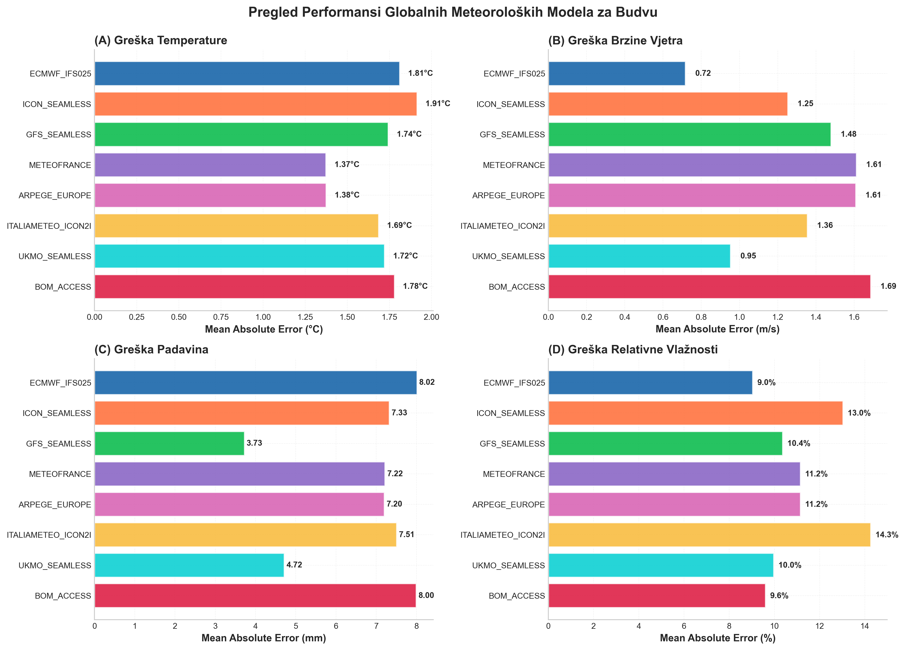
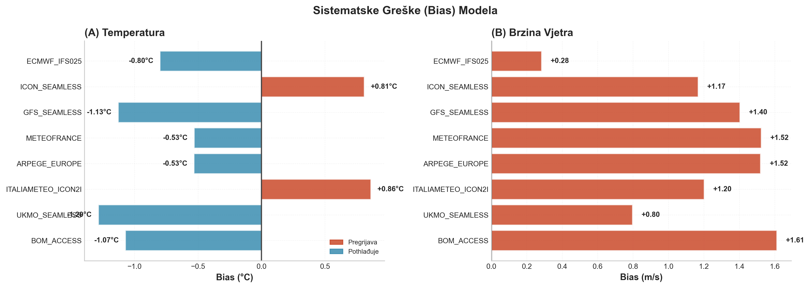
| Model | MAE | Bias |
|---|---|---|
| ECMWF IFS025 | 0.72 | +0.28 |
| UKMO Seamless | 0.95 | +0.80 |
| ICON Seamless | 1.25 | +1.17 |
| GFS Seamless | 1.48 | +1.40 |
Svi bez izuzetka precjenjuju vjetar. ECMWF je duplo bolji od ostalih.
| Model | MAE | Bias |
|---|---|---|
| ECMWF IFS025 | 9.05 | -1.59 |
| BOM ACCESS | 9.61 | +3.02 |
| UKMO Seamless | 9.98 | +3.50 |
| ICON Seamless | 13.04 | -9.27 |
ICON ima bias od -9% za vlažnost. Devet posto!
| Model | MAE | Bias |
|---|---|---|
| ItaliaMeteo ICON2I | 0.68 | +0.58 |
| BOM ACCESS | 1.00 | +0.87 |
| MeteoFrance | 1.09 | +1.08 |
| GFS Seamless | 2.75 | +2.73 |
ItaliaMeteo (ICON-D2 na 2km rezoluciji) je daleko najbolji za pritisak.
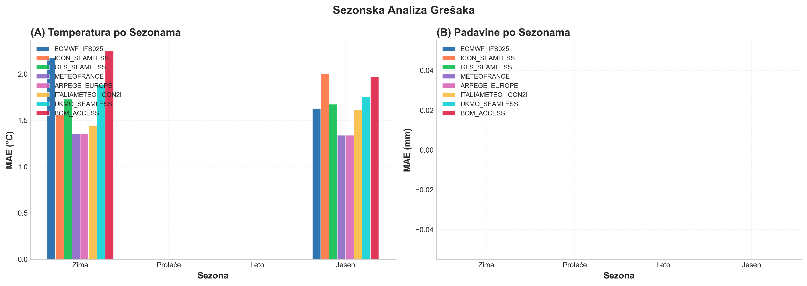
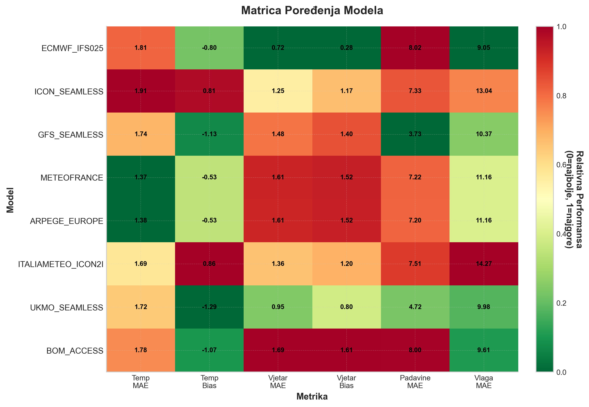
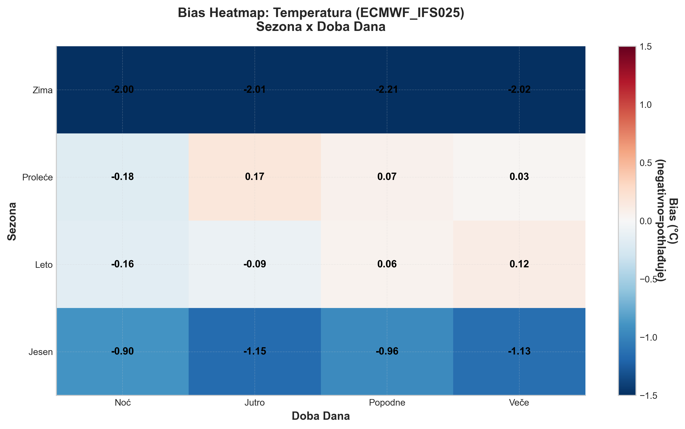
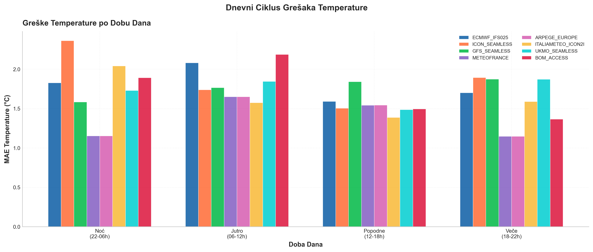
Osnovna ideja: uzmeš prognoze svih 11 modela za svaki sat, dodaš kontekst (doba dana, sezona, temperatura mora, istorijski bias, i još dosta toga), i pustiš algoritam da nauči vezu između svega toga i stvarnog mjerenja.
Koristim XGBoost — gradient boosting algoritam koji gradi stotine "stabala odlučivanja" jedno na drugo, gdje svako sljedeće stablo pokušava da popravi greške prethodnog. Plus CatBoost i LightGBM kao dodatne algoritme, čiji se rezultati kombinuju.
Jedan XGBoost po parametru, ručno podešen, isti hiperparametri za sve. Radio je OK — temperatura je pala sa MAE 1.37°C (MeteoFrance, najbolji sirovi) na 0.86°C. Solidno, ali imao je dosta prostora za poboljšanje.
Kompletno prepisan pipeline. Umjesto jednog modela, sada se trenira 5 baznih modela po parametru, hiperparametri se automatski pretražuju za svaki parametar posebno, sve je adaptirano na tip varijable. Temperatura je pala na 0.36°C.
Evo šta je sve promijenjeno:
Ranije, kad model nema prognozu (npr. ECMWF nema podatke prije 2024.), stavljao sam 0. Problem: 0°C za temperaturu ili 0 hPa za pritisak — to je realna vrijednost i zbunjuje model. XGBoost zapravo zna da radi sa NaN-ovima nativno i rutira ih optimalno u stablima. Jednostavna promjena, ogroman efekat.
Optuna automatski traži najbolju kombinaciju hiperparametara za svaki parametar. Dubina stabla, learning rate, regularizacija, čak i tip loss funkcije — sve se bira posebno. Ispostavilo se da pritisak voli MSE jer nema outliera, a skoro sve ostalo preferira quantile loss. Oblačnost ima kratko pamćenje (180 dana decay), a vjetar dugo (730 dana) — jer se obrasci bure ne mjenjaju brzo.
| Parametar | Dubina | LR | Loss | Decay |
|---|---|---|---|---|
| Temperatura | 5 | 0.038 | quantile | 545d |
| Tačka rose | 6 | 0.006 | huber | 365d |
| Vlažnost | 5 | 0.038 | quantile | 545d |
| Brzina vjetra | 6 | 0.008 | quantile | 730d |
| Udari vjetra | 6 | 0.008 | quantile | 730d |
| Pritisak | 4 | 0.005 | MSE | 545d |
| Oblačnost | 4 | 0.006 | quantile | 180d |
| Solar. radijacija | 6 | 0.008 | quantile | 730d |
Umjesto samo jednog XGBoosta, za svaki parametar se trenira 5 modela: tri varijante XGBoosta (direktan, rezidualni, MSE), plus CatBoost i LightGBM. Onda RidgeCV (linearna regresija sa regularizacijom) uči optimalne težine za svaki — koliko da "sluša" koji model.
Pipeline testira razne strategije i automatski bira šta radi najbolje. Za temperaturu je to bio rezidualni pristup (predviđaj korekciju, ne apsolutnu vrijednost), za vlažnost ridge meta-learner, za padavine Tweedie distribucija.
Pipeline generiše ~1.400 feature-a. Većina je korisna, ali neke su šum. SHAP dodijeli svakom feature-u ocjenu važnosti i najslabijih 5% se izbaci. Za pritisak je SHAP bio posebno agresivan — smanjio je sa 1.380 na 725 feature-a jer je signal jasan i čist.
Budva je na obali. More zimi grije, ljeti hladi. Podatke o temperaturi Jadranskog mora skidam sa Open-Meteo Marine API-ja i dodajem kao input — jer nijedan od 11 NWP modela nema tu informaciju u svom outputu za ovu lokaciju.
Bura je specifična za ovaj dio obale — jak sjeveroistočni vjetar koji se kanališe kroz planine. Detektujem je iz prognoze svakog modela (smjer 0-90°, brzina >7 m/s) i računam slaganje modela. Isto tako otkrivam fronte (nagli pad pritiska + oblačnost), perzistentnu kišu, noćnu vlažnost, zimske oblačne režime...
Kiša je najteža varijabla. 90% sati je suvo, a kad pada — varira od 0.1 do 50+ mm. Tweedie distribucija je napravljena za ovakve podatke — prirodno modelira i one česte nule i rijetke obilne padavine, bez potrebe za odvojenim klasifikatorom.
Finalni brojevi, testirani na podacima od jula 2025. nadalje (koje model nikad nije vidio tokom treninga):
| Parametar | v2 MAE | v1 MAE | Najbolji NWP | vs NWP |
|---|---|---|---|---|
| Temperatura | 0.356°C | 0.861°C | 1.282°C (ARPÈGE) | +72% |
| Tačka rose | 1.163°C | 1.028°C | 1.836°C (ECMWF) | +37% |
| Vlažnost | 2.665% | 6.044% | 9.027% (ECMWF) | +70% |
| Brzina vjetra | 0.262 m/s | 0.454 m/s | 0.707 m/s (ECMWF) | +63% |
| Udari vjetra | 0.424 m/s | 0.608 m/s | 1.837 m/s (GFS) | +77% |
| Pritisak | 0.121 hPa | 0.244 hPa | 0.714 hPa (ItaliaMeteo) | +83% |
| Oblačnost | 9.733% | 9.723% | 27.393% (BOM) | +64% |
| Padavine | 1.158 mm | — | 1.089 mm (ECMWF) | −6% |
| Solar. radijacija | 20.571 W/m² | — | 34.930 W/m² (ItaliaMeteo) | +41% |
| Parametar | Poboljšanje |
|---|---|
| Temperatura | −58.6% |
| Vlažnost | −55.9% |
| Pritisak | −50.4% |
| Brzina vjetra | −42.3% |
| Udari vjetra | −30.3% |
| Tačka rose | +13.1% (regresija) |
| Oblačnost | ~0% |
Pet parametara je dramatično poboljšano. Tačka rose je jedina regresija — deficit transform u kombinaciji sa Huber lossom je pretjerano "gladio" signal. Oblačnost je ostala ista — ali i v1 je već bio 64% bolji od najboljeg NWP za oblačnost, pa tu nema puno prostora.
Padavine su jedini parametar gdje korigovani model nije uspio pobijediti sirovi ensemble prosjek. Očekivano — globalni modeli jednostavno nemaju rezoluciju da uhvate konvektivne ćelije iznad Budve, a ML ne može izmisliti informaciju koja ne postoji u inputu.
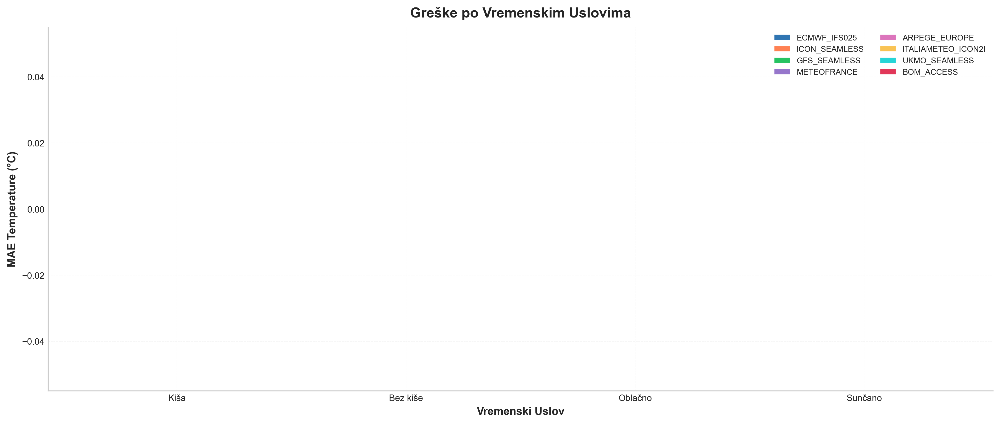
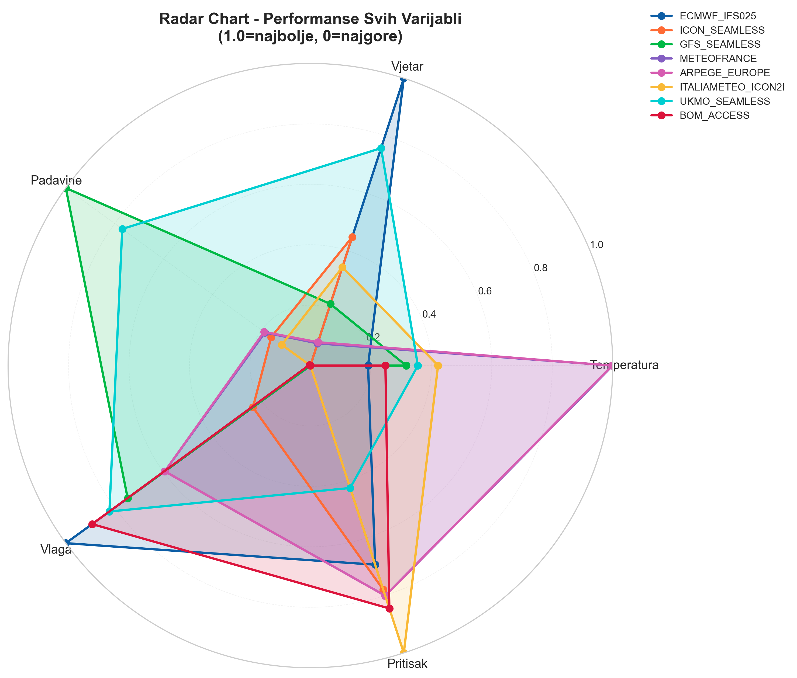
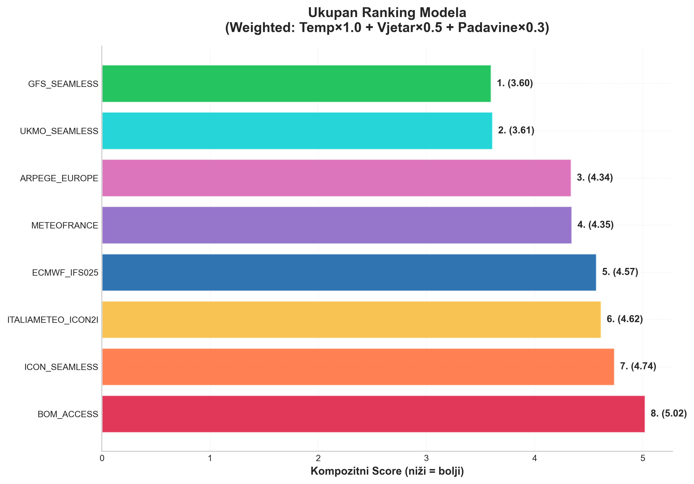
XGBoost gradi stotine stabala odlučivanja sekvencijalno — svako sljedeće pokušava da ispravi greške prethodnog. Konačna predikcija je suma svih stabala, pomnožena sa learning rate-om (η), što sprečava prebrzo učenje:
Za svako moguće dijeljenje čvora, računa gain koristeći gradijente prvog i drugog reda. Split se pravi samo ako je gain dovoljno veliki — γ parametar penalizuje dodavanje novih grana i time kontroliše kompleksnost:
U ovom projektu, svaki parametar ima svoja optimizovana stabla — temperatura koristi stabla dubine 5 sa learning rate-om 0.038, dok pritisak koristi pliča stabla (dubina 4) sa mnogo manjim learning rate-om (0.005). Razlika u podešavanju je velika i to je jedan od razloga zašto je automatsko pretraživanje bilo toliko važno.
Padavine. Lokalne oluje se dešavaju na skali od par kilometara i traju 15-30 minuta. Globalni modeli to ne vide, i ML ne može da kreira informaciju koja ne postoji u inputu.
Rezolucija. Budva je stješnjena između planina i mora. Orografska kompleksnost bi zahtijevala model na ~1-2 km gridu. ItaliaMeteo ICON2I (2.2 km) i DMI HARMONIE (2 km) pomažu, ali su na rubu svojih domena.
Ensemble ≠ novi model. 11 modela koji svi griješe na sličan način neće magično dati tačan odgovor. Ansambl smanjuje slučajnu grešku, ali ne može kompenzovati sistematski nedostatak rezolucije.
Tačka rose. v2 je lošiji od v1 za ovu varijablu. Kandidat za fix u v3.
Učitavanje...
Živa prognoza radi automatski — preuzima najnovije prognoze svih 11 modela, primijeni trenirane korekcije, i generiše korigovanu +48h prognozu. Dostupna je ovdje.
Za v3 planiram da popravim tačku rose (vjerovatno treba preskočiti deficit transform), dodam radar podatke za padavine, i povećam broj Optuna trial-ova sa jačim hardverom.
Python 3.13. XGBoost 3.2, CatBoost 1.2, LightGBM 4.6, Optuna 4.8, SHAP 0.51, scikit-learn. Pipeline je ~3.100 linija koda, treniranje traje ~12 sati na CPU. Kod je na GitHubu.
Živim u Budvi i budem nekad isfrustriran tačnošću vremenskih prognoza. Istovremeno, fascinantan je problem — globalni modeli simuliraju cijelu atmosferu koristeći fizičke jednačine, ali ne mogu biti savršeni za svaku lokaciju. ML može da nauči lokalne obrasce, a dok Crna Gora ne dobije sopstveni model visoke rezolucije, ovo je koristan pristup.
Pitanja: ivanovicmatija2007@gmail.com
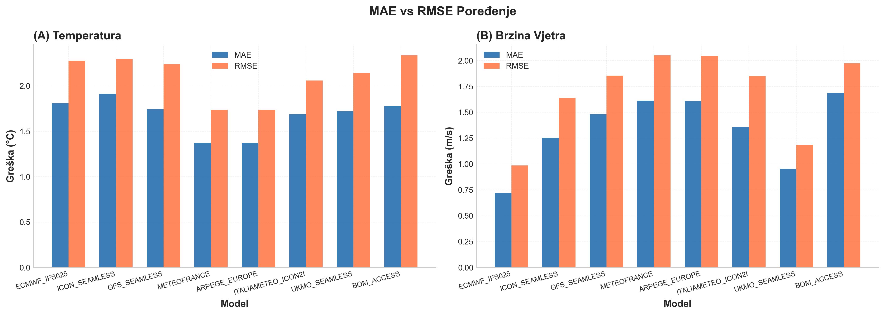
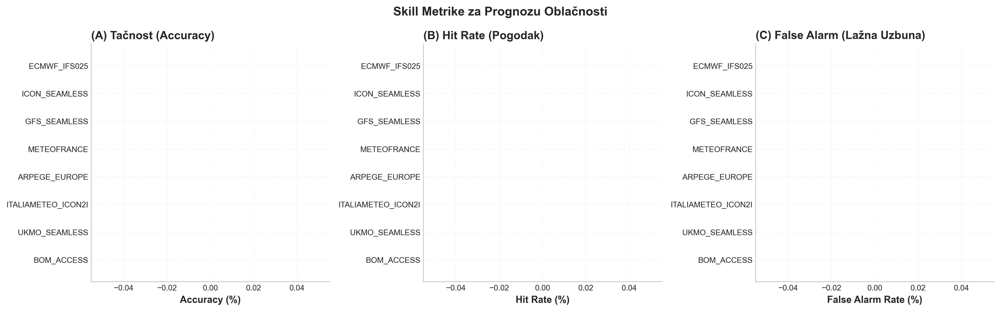
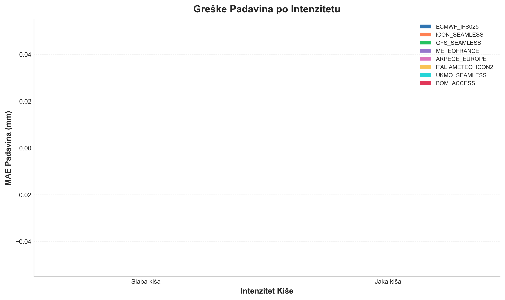